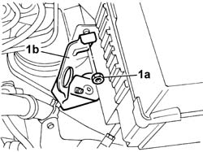
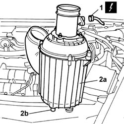

1048A10 COMPLETE AIR FILTER -R.R.
- Path
- Procedures > 10 ENGINE > 1048 ENGINE AIR SUPPLY CIRCUIT > 1048A VACUUM AIR CIRCUIT > 1048A10 COMPLETE AIR FILTER -R.R.
- Kind
- repair procedure (removal / refitting; the operation number is the code)
- Applies to
- engines: 2.4 JTD 20V; all production periods
- Interactive page
- https://sloeber94.github.io/elrnDB-lThss/en/#/850392
Applies to: engines: 2.4 JTD 20V; all production periods
 Removing
Removing
 Refitting
RefittingSee in Op. 7055B54 PROTECTION/GUARD under engine - R.R.
See in Op. 7040D50 ENGINE COMPARTMENT UPPER SOUND INSULATION SHIELD - R.R.
See in Op. 1016A10 SOUND-PROOFING COVER - R.R.
See in Op. 1048B44 RIGID air supply PIPE from heat exchanger to intake manifold - R.R.
See in Op. 1048A56 UPPER RESONATOR - R.R.
See in Op. 1048A50 air inlet pipe to turbocharger - r + r
See in Op. 1048A21 AIR INLET HOSE FROM INTAKE TO FILTER - R.R.
1. Undo the fixing nut (1a) and remove the resonator mounting bracket (1b).

Applies to: engines: 2.4 JTD 20V; all production periods
1. Disconnect the electrical connection for the air flow meter.
 | Description | Connector |
|---|---|---|
1 | Air flow meter | K041 |
2. Remove the air filter casing (2a), releasing it from the lower fastening pins (2b).

Applies to: engines: 2.4 JTD 20V; all production periods
Refitting
Removing- Fit the air filter casing taking care to fit the rubber pins on the mounting.
- Tighten the bolts fixing the resonator mounting bracket.
- Connect the electrical connection for the air flow meter.
| Description | Connector |
|---|---|---|
. | Air flow meter | K041 |
See in Op. 1048A21 AIR INLET HOSE FROM INTAKE TO FILTER - R.R.
See in Op. 1048A50 air inlet pipe to turbocharger - r + r
See in Op. 1048A56 UPPER RESONATOR - R.R.
See in Op. 1048B44 RIGID air supply PIPE from heat exchanger to intake manifold - R.R.
See in Op. 1016A10 SOUND-PROOFING COVER - R.R.
See in Op. 7040D50 ENGINE COMPARTMENT UPPER SOUND INSULATION SHIELD - R.R.
Topics linked from this page (7)
- 1016A10 SOUND-PROOFING COVER - R.R.
- 1048A21 AIR INLET HOSE FROM INTAKE TO FILTER - R.R.
- 1048A50 air inlet pipe to turbocharger - r + r
- 1048A56 UPPER RESONATOR - R.R.
- 1048B44 RIGID air supply PIPE from heat exchanger to intake manifold - R.R.
- 7040D50 ENGINE COMPARTMENT UPPER SOUND INSULATION SHIELD - R.R.
- 7055B54 PROTECTION/GUARD under engine - R.R.
Topics that link to this page (10)
- 0010T40 MANUAL GEARBOX OIL - Change
- 1004B18 POWER UNIT with manual gearbox, with front suspension subframe - R.R.
- 1016C10 SINGLE CYLINDER HEAD - R.R. and Replace gasket
- 1028H10 CONNECTING ROD and PISTON SET - R&R
- 1064A24 TURBOCHARGER - EXHAUST MANIFOLD - HOSE CONNECTED TO EXHAUST PIPE - R.R.
- 1072C44 Exhaust manifold heat shield on BULKHEAD - R.R.
- 1084B40 Engine oil supply pipe to turbocharger
- 1088E10 Radiator cooling FAN - R.R.
- 4130B94 DUPLEX PIPES from cooling coil or heat exchanger radiator - R.R.
- 4410D10 Front suspension FRAME - R.R.